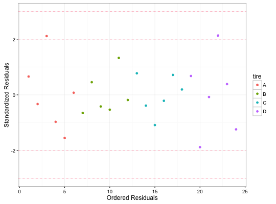
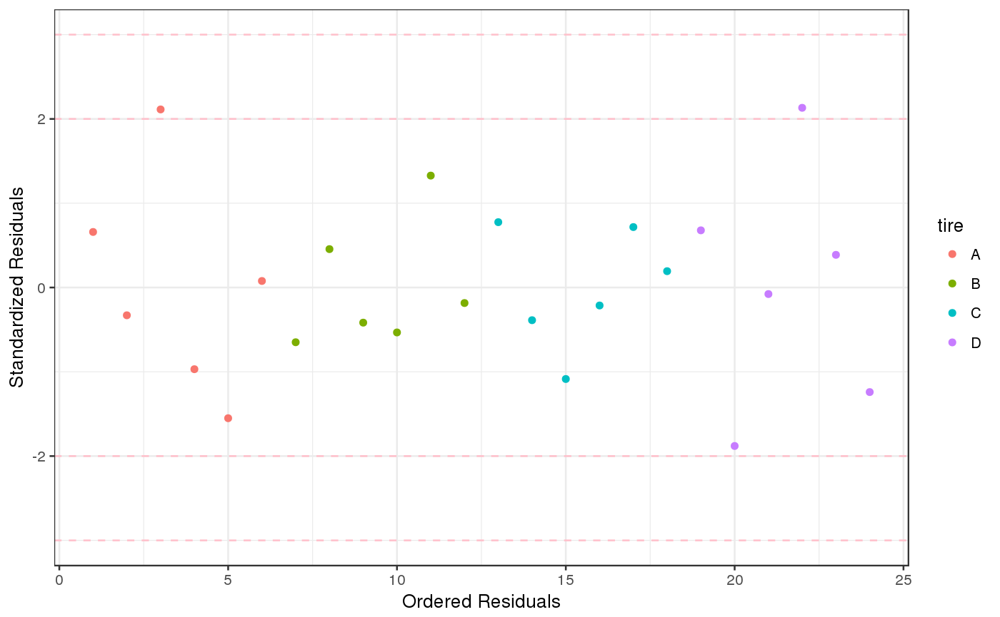
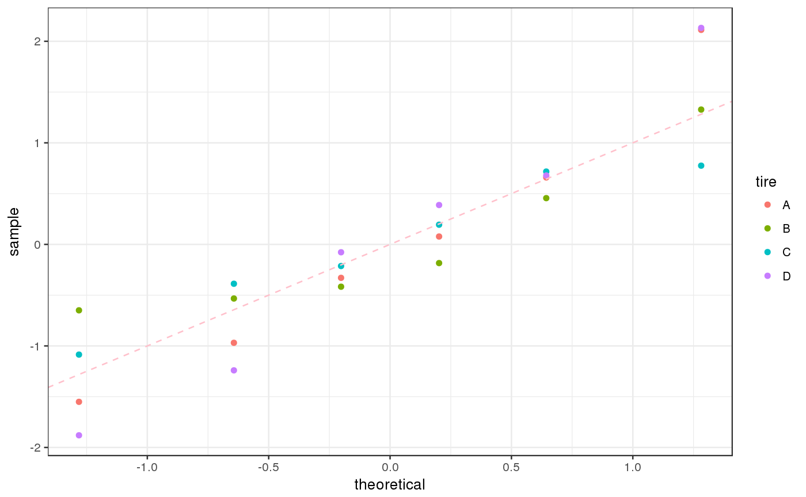
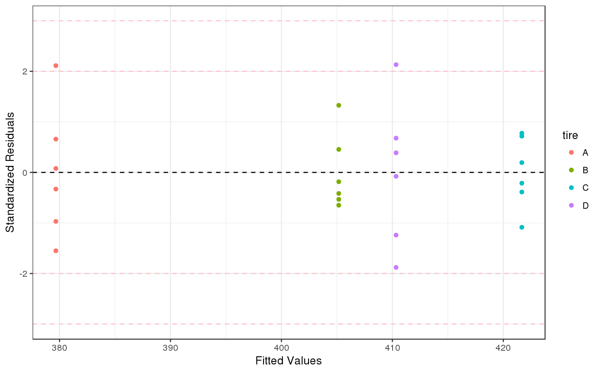

Checking Plots
Function that creates four graphs that can be used to help assess independence, normality, and constant variance
checking.plots(model, n.id = 3, COL = c("#0080FF", "#A9E2FF"))
Arguments
| model | an aov or lm object |
|---|---|
| n.id | the number of points to identify |
| COL | vector of two colors |
See also
Examples
mod.aov <- aov(stopdist ~ tire, data = TIRE) checking.plots(mod.aov)rm(mod.aov) # Similar graphs using ggplot2 # mod.aov <- aov(stopdist ~ tire, data = TIRE) fortify(mod.aov)#> stopdist tire .hat .sigma .cooksd .fitted .resid #> 1 391 A 0.1666667 19.11833 0.0217124880 379.6667 11.333333 #> 2 374 A 0.1666667 19.27679 0.0054281220 379.6667 -5.666667 #> 3 416 A 0.1666667 17.03665 0.2231540394 379.6667 36.333333 #> 4 363 A 0.1666667 18.87005 0.0469560726 379.6667 -16.666667 #> 5 353 A 0.1666667 18.13038 0.1202075458 379.6667 -26.666667 #> 6 381 A 0.1666667 19.32642 0.0003005189 379.6667 1.333333 #> 7 394 B 0.1666667 19.12452 0.0210785810 405.1667 -11.166667 #> 8 413 B 0.1666667 19.22882 0.0103725964 405.1667 7.833333 #> 9 398 B 0.1666667 19.24523 0.0086821778 405.1667 -7.166667 #> 10 396 B 0.1666667 19.19156 0.0142042120 405.1667 -9.166667 #> 11 428 B 0.1666667 18.45792 0.0881318527 405.1667 22.833333 #> 12 402 B 0.1666667 19.31294 0.0016951142 405.1667 -3.166667 #> 13 435 C 0.1666667 19.03667 0.0300518865 421.6667 13.333333 #> 14 415 C 0.1666667 19.25658 0.0075129716 421.6667 -6.666667 #> 15 403 C 0.1666667 18.75142 0.0589016975 421.6667 -18.666667 #> 16 418 C 0.1666667 19.30735 0.0022726739 421.6667 -3.666667 #> 17 434 C 0.1666667 19.07920 0.0257131454 421.6667 12.333333 #> 18 425 C 0.1666667 19.31116 0.0018782429 421.6667 3.333333 #> 19 422 D 0.1666667 19.10566 0.0230084756 410.3333 11.666667 #> 20 378 D 0.1666667 17.53838 0.1767238748 410.3333 -32.333333 #> 21 409 D 0.1666667 19.32642 0.0003005189 410.3333 -1.333333 #> 22 447 D 0.1666667 16.99148 0.2272673914 410.3333 36.666667 #> 23 417 D 0.1666667 19.25658 0.0075129716 410.3333 6.666667 #> 24 389 D 0.1666667 18.57092 0.0769328293 410.3333 -21.333333 #> .stdresid #> 1 0.65897630 #> 2 -0.32948815 #> 3 2.11260048 #> 4 -0.96908279 #> 5 -1.55053246 #> 6 0.07752662 #> 7 -0.64928547 #> 8 0.45546891 #> 9 -0.41670560 #> 10 -0.53299553 #> 11 1.32764342 #> 12 -0.18412573 #> 13 0.77526623 #> 14 -0.38763312 #> 15 -1.08537272 #> 16 -0.21319821 #> 17 0.71712126 #> 18 0.19381656 #> 19 0.67835795 #> 20 -1.88002061 #> 21 -0.07752662 #> 22 2.13198214 #> 23 0.38763312 #> 24 -1.24042597# library(gridExtra) used to place all graphs on the same device p1 <- ggplot(data = mod.aov, aes(x = 1:dim(fortify(mod.aov))[1], y = .stdresid, color = tire)) + geom_point() + labs(y = "Standardized Residuals", x = "Ordered Residuals") + geom_hline(yintercept = c(-3,-2, 2, 3), linetype = "dashed", col = "pink") + theme_bw() p2 <- ggplot(data = mod.aov, aes(sample = .stdresid, color = tire)) + stat_qq() + geom_abline(intercept = 0, slope = 1, linetype = "dashed", col = "pink") + theme_bw() p3 <- ggplot(data = mod.aov, aes(x = .fitted, y = .stdresid, color = tire)) + geom_point() + geom_hline(yintercept = 0, linetype = "dashed") + labs(y = "Standardized Residuals", x = "Fitted Values") + geom_hline(yintercept = c(-3, -2, 2, 3), linetype = "dashed", color = "pink") + theme_bw() p1p2p3# Or use the following (not run) to get all graphs on the same device # library(gridExtra) # grid.arrange(p1, p2, p3, nrow=3) rm(mod.aov, p1, p2, p3)